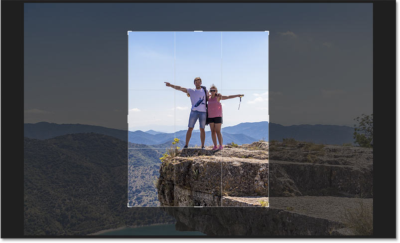

This could be simply removing extra background to better emphasize the subject
of a photograph, or it could be properly aliging the subject within the farme of the picture.

Good cropping will place the eyes around the image.
There may be a mistake of placing the subject of the photographs, either person or object, actually not chosing the center in the freame. Typically it is
preferred that subjects, especially people to be off-center.
There are head rooms and leads rooms to keep in mind. The amount of space in front of a person's nose is called nose room or head room around
the space abvoe a person's head is called head room. We should pay attention to chosse mount of space in front of a person's nose and space above the head. Viewer can see part of what the subject is looking at. Sometimes we have to remember that subject
will be fixed and the background will move. For example in the flying plane, plane will be fixed but the background will move.
When we retrieve a digital photo, it will be larger tha they should be to use in the website. When we crop it, it will likely still nee to resize to make it fit properly in the website. You can use either an image resizing tool or you can resize them image manually by yourself. Any way the image size should be exactly fitted in the webpage.
| Page 4 | GRAPHICS FOR WEB [Page -5] | Page 6 |